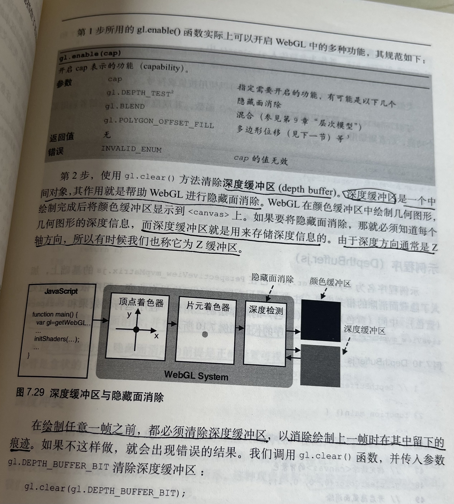

正确处理对象的前后关系——深度冲突
WebGL 为了加速绘制操作，是按照顶点在缓冲区中的顺序来处理他们的。WebGL 在默认情况下会按照缓冲区的顺序绘制图形，而且后绘制的图形覆盖先绘制的图形，因为这样做很高效
之所以会产生深度冲突哦，是因为两个表面过于接近，深度缓冲区有限的精度已经不能区分那个在前面，那个在后面。WebGL 提供了一种被称为 《多边形偏移》 的机制来解决
这个问题。该机制将自动在 Z 值加上一个偏移量，偏移量的值由物体表面相对于观察者视线的角度来确定。
开启 《多边形偏移》只需要两行代码：
1、启用多边形偏移。gl.enable(gl.POLYGON_OFFSET_FILL)
2、在绘制之前指定用来计算偏移量的参数。gl.polygonOffset(1.0,1.0)
